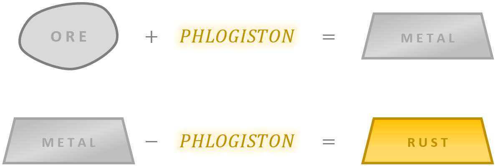

This theory was based on the idea that fire was due to a fiery principle called "phlogiston," which was given up during combustion. The Theory of Phlogiston was universally accepted in 1780.
Phlogiston theory states that phlogisticated substances are substances that contain phlogiston and dephlogisticate when burned. Dephlogisticating is the process of releasing stored phlogiston, which is absorbed by the air. Growing plants then absorb this phlogiston, which is why air does not spontaneously combust and also why plant matter burns as well as it does.
Metals were formed, the theory said, when their ores were heated in the presence of charcoal, a rich source of phlogiston. When those metals rusted, they released their phlogiston, turning into what was then called a "calx" (or rust). Calx is basically the ashy substance that remains after metals have been thoroughly roasted or burned. Chemists could turn the calx back into a metal by heating it with charcoal. Metal was thought of as a compound of calx and phlogiston, where heat liberates Phlogiston and leaves behind the calx.
When iron ore was heated in the presence of charcoal, the phlogiston from the charcoal fused with the ore to form metallic iron. When exposed to air, or water, the iron would release its phlogiston as it rusted.
Phlogiston seen as an essential element of all combusitble material, which escapes with burning of these combustibles and enters the atmosphere or joins with substances like calx to form metal.
Carbon was thought of as almost pure phlogiston, as it leaves little ash when it burns away. So when carbon is mixed with the calx of lead and when the mixture was heated for a long time, pure metallic lead would be produced. In other words, [lead calx + phlogiston = metallic lead].
The rusted version of a metal would weigh heavier than the pure version. This was a problem, as it would not make sense that metal would become heavier if phlogiston was removed. This would mean that phlogiston had negative weight.
Sources: